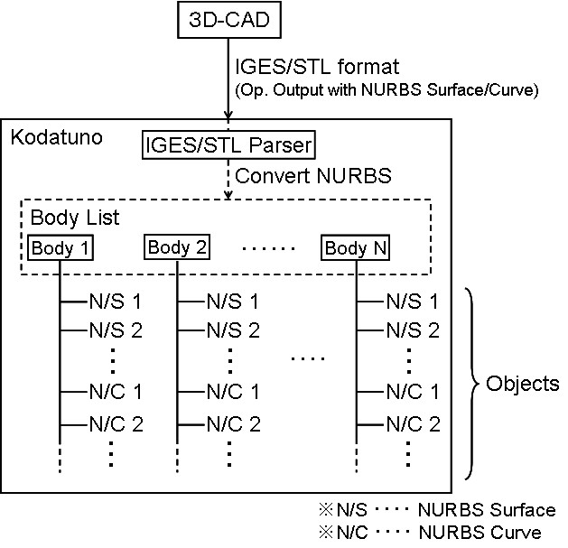

|
|
|
Prev
Index
Next |
Kodatuno内部表現の概要
KodatunoはCADデータの中間フォーマットであるIGESあるいはSTL形式のデータを読み込むことができます．ただし， CADでのIGES出力に際して，NURBS出力指定がオプションなどにより選択可能である場合は，そのように指定しなければなりません．
IGESフォーマットCADデータはIGESパーサーによってKodatuno内部表現に変換されます．IGESデータが持つ曲面情報は基本的には既に NURBS表現になっていないといけません．Kodatuno内部では，各立体データを"Body"と呼びます．また，複数のIGESデータを読み込んだ場合は， 複数のBodyが生成され，これらBodyは"Body List"に登録されます．
各BodyはIGESデータのNURBS表現として保持されます．NURBS表現の種類としては，NURBS曲面，トリムドNURBS曲面，NURBS曲線の3つが存在します． Bodyを構成するこれら要素をオブジェクトと呼びます．
更に詳しい情報は1.4 Koudatuno内部でのCADデータの構成 及び， 3.8 CADデータの内部表現 を参照してください． ［Kodatuno内部表現］
| Copyright(C) Kodatuno Development Team, 2011 | Last modified: Nov. 11, 2011 |